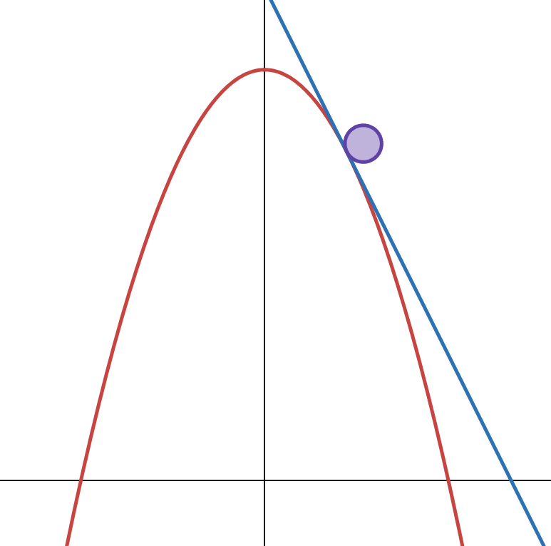
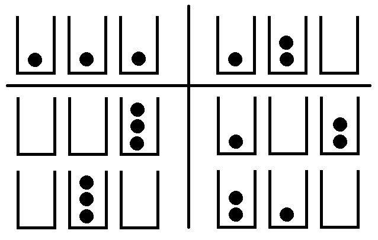
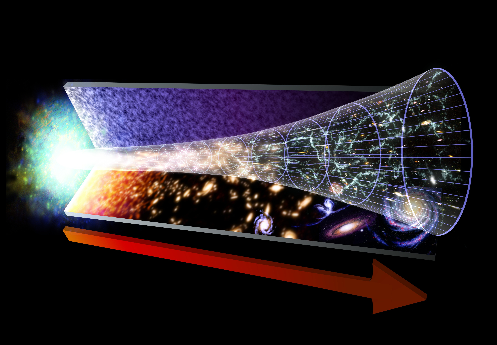
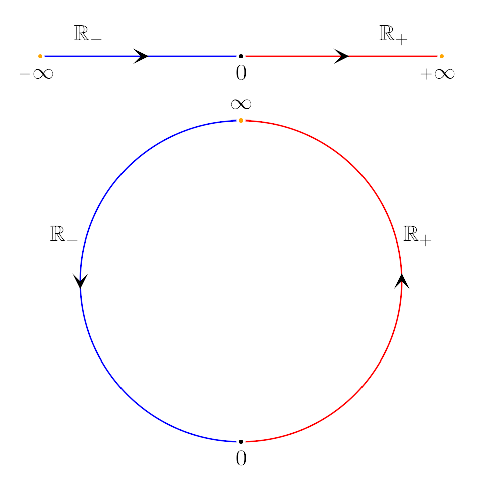

Thermal physics is the branch of physics which explores the flow of energy between systems. At a macroscopic scale, we observe this in the form of thermodynamics, while statistical mechanics explains the same phenomena from a microscopic perspective. It may surprise you to learn that everything you intuitively know about heat and temperature is just a consequence of basic probability once you accept the existence of atoms. Even in extreme cases, where intuition fails, the laws of statistics can make accurate predictions about thermal behaviour, though certain ones may shock you. These predictions have also been verified in experiments, allowing inventions you have probably used in your daily life before. Before exploring such curiosities, however, we need to go over some basic concepts first.
Energy, Work, and Heat
Energy is a buzzword that gets thrown around a lot, but concretely, it's just a certain quantity associated with a physical system (typically expressed in units of Joules). The two kinds are
kinetic energy and
potential energy, so the total energy is just the sum of these two. According to all of humanity's observations, this total energy never disappears and is never created (the first law of thermodynamics); if the energy of some system changed, the difference must have gone to a different system. The two ways energy can be transferred between systems are through
work and
heat. Following this, the second law of thermodynamics essentially says that heat spontaneously flows from hot systems to cold systems. If no heat is flowing between them, then it means that they have the same temperature (this is more or less the "zeroth" law of thermodynamics). The third law of thermodynamics states that it is impossible to reach absolute zero, which is the minimum energy state of a system.

A force that can be associated with potential energy is called conservative. In these cases, force is the negative slope of potential energy as a function of position. The reason why we choose the negative slope is so that in situations like a ball rolling on a hill, the potential energy graph looks like the physical situation (otherwise, it would be upside down).
Statistical Mechanics
To introduce the concept of entropy, there is really no good substitute for a statistical definition (traditionally, it is described as a quantity representing the "disorder" of a system). Suppose we have some object (a kind of atom) that only has specific, equally spaced energy levels. Now suppose we have several of them, which together form a physical system. Given a fixed total energy, there are multiple configurations possible in the system, which we call microstates. For example, if we have 3 objects, and 3 units of energy among them in total, we could have one object with all 3 units and the others with none, or we could have each object with 1 unit, or any other permutation with a total of 3 energy units. The number of these allowed configurations is called the multiplicity of the system (in our case, this is 10). Multiplicity grows approximately exponentially with the number of atomic units of a system, so taking a logarithm of it would be convenient. Additionally, systems on the everyday scale of humans are usually composed of something on the order of 10^23 atoms, and giving it units of energy per unit temperature is nice for some other reasons, so we multiply the natural logarithm of the multiplicity by Boltzmann's constant (1.38 times 10^-23 Joules per
Kelvin) to get the entropy.

The example system described is known as the Einstein solid, where the "atoms" are non-interacting quantum harmonic oscillators. These are some allowed microstates of the Einstein solid with 3 harmonic oscillators and 3 units of energy.
Now say we have two of these 3-oscillator Einstein solids, again with a fixed total energy (let's say 6 units now), which can be seen as a larger system composed of two subsystems. The multiplicity of this overall system is just the product of the multiplicities of the two subsystems, since for each microstate of the first subsystem, each microstate of the second with the correct total energy is allowed. If we calculate the overall multiplicty when we distribute different amounts of energy to each subsystem, we find that it is highest when they are shared equally (giving a multiplicity of 10*10=100). The fundamental assumption of statistical mechanics says that all allowed microstates are equally likely, so multiplicity is proportional to probability. This means that the most likely state of the overall system is the one where energy is equally shared among its subsystems, which is when entropy is maximized. A consequence of this is that if we allow energy to be randomly transferred between the subsystems (which happens when two systems are in contact), they will eventually end up sharing the energy equally no matter how uneven they started off, perhaps with some occasional fluctuations.
This therefore explains the second law of thermodynamics, which, stated differently, says that the entropy of an
isolated system should not trend downwards over time. It also allows us to explicitly define temperature (which exists because of the zeroth law) as the rate of change of energy with respect to entropy (or more commonly, the inverse of the rate of change of entropy with respect to energy). We see that for our example system, the state of maximum entropy is the one where the two subsystems have equal temperature (this is called a state of thermal equilibrium). We also see that adding energy will always increase the entropy of our system, since there are more ways to distribute that energy, so its temperature is always positive. However, this need not always be the case.

The second law of thermodynamics is what allows us to define a "forward" direction for time; that is, the one in which entropy grows. For instance, it would be easy to tell if a video of a plate being broken were played in reverse, since the entropy of a plate increases when it is broken. Although no physical principles would be broken by its pieces coming together spontaneously, the chances are extraordinarily low, making the second law fundamentally probabilistic in nature.
Population Inversion
If there is an upper limit to the amount of energy our "atoms" can have, some interesting things can happen. Suppose there are 2 possible energy levels and 4 atoms, with 2 total units of energy. This can only mean that two of the atoms are in the upper level, and the other two are in the lower level. But if we split this system into two subsystems based on these, we see that this is actually the state of maximum entropy, which means that the entropy should stay the same if we slightly change the energy. By our definition, the temperature is now infinite, which occurs when the chances of being in a higher state of energy (an "excited state") are equal to the chances of being in a lower state. If we go even further and give our system 3 total units of energy, we see that adding more energy actually decreases the number of possible microstates (we went from 6 to 4, and would go from 4 to 1 if we added another). The temperature has now gone negative. In case that wasn't strange enough, if we were to put two of these systems together where one has 3 units of energy and the other has 1, the first system would give a unit to the second to share equally, but if heat flows from hot to cold, then this means our negative temperature system is hotter than the one with positive temperature...

It appears that in an absolute scale, temperature has the topology (shape) of a circle (the projectively extended real number line) rather than a line (the extended real number line). This means that positive and negative infinity are the same thing, so the positive numbers "wrap around" to the negative side once they reach it. This also means that negative temperatures which are closer to zero are hotter than those which are closer to infinity.
The phenomenon where components of a system are more likely to be in higher energy states than lower ones is called population inversion, and it turns out that systems with an upper energy limit do indeed exist in real life, including the two-level system. Atomic nuclei can have opposite magnetic polarities due to spinning in opposite directions, so by activating a magnetic field, this gives nuclei with one spin a higher energy than the other. The lower energy nuclei can be selectively flipped using radio waves, and once the 50% excited state is passed, the temperature goes negative (ignoring other sources of energy in the system). A population-inverted state cannot be in thermal equilibrium, however, so when energy stops being added to the system, the spins will return to normal. A more familiar example of population inversion occurs in the operation of a laser, where more electrons are in their excited energy levels than their lowest energy state.

The mechanism for inducing population inversion in a laser is called pumping, in which energy is externally supplied to the "gain medium" so that more atoms are in an excited state than the lowest one. This produces a chain reaction where light is spontaneously emitted from an atom, which stimulates light to be emitted from other atoms, and thus a feedback loop starts.
Recap
To summarize, by defining energy, and assuming that physical systems are composed of indivisible components, we came up with a method to count their possible microscopic configurations in multiplicity (and equivalently, entropy). By examining the relationship between energy and entropy, we defined temperature, and showed that hotter systems will spontaneously give colder systems energy when they are in thermal contact. We then showed how systems with bounded energy can attain a negative temperature with respect to certain sources of energy, and finally, we showed that these systems are in fact hotter than those with positive temperature. This illustrates the power of statistical mechanics when we combine the approaches of quantum mechanics with classical thermodynamics, which can be applied to a wide variety of situations, including electrons in conductors and exotic states of matter.

{kind=link}